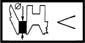
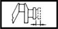

CRANKSHAFT
- Path
- Technical Data > MANUFACTURING DATA > 10 ENGINE > 1024 CRANKSHAFT AND FLYWHEEL > CRANKSHAFT
- Kind
- technical data / specifications
- Applies to
- all engines; all production periods
- Interactive page
- https://sloeber94.github.io/elrnDB-fDbl/en/#/2582660
Applies to: all engines; all production periods
Big end bearing - crankpin play (mm) | Validity | |||
|---|---|---|---|---|
0.025 - 0.063 | 1.6 16v | |||
Big end bearings (mm) | Validity | |||
0.025÷0.050 | 1.6 16v | |||
Big end bearings (mm) | Validity | |||
0.030 ÷ 0.062 | 1.3 JTD | |||
Clearance between big end bearings-Crankpins (mm) | Validity | |||
0.024 - 0.062 | 1.2 8v | |||
Clearance between crankshaft bearings - big end bearings (mm) | Validity | |||
0.025 - 0.049 | 1.2 8v | |||
Clearance between crankshaft bearings - main journals (mm) | Validity | |||
0,019÷0,046 | 1.6 16v | |||
Clearance between crankshaft bearings - main journals (mm) | Validity | |||
0.019 - 0.508 | 1.6 16v | |||
Clearance between crankshaft bearings - main journals (mm) | Validity | |||
0.028 ÷ 0.048 | 1.3 JTD | |||
Crankpin diameter (mm) | Validity |  | ||
41.990 ÷ 42.008 | 1.2 8v | |||
Crankpin diameter (mm) | Validity | |||
Category B | Category C | Class A | ||
45.510 ÷ 45.517 | 45.503 ÷ 45.509 | 45.518 ÷ 45.523 | 1.6 16v | |
Crankpin diameter (mm) | Validity | |||
Category B | Category C | Class A | ||
50,666 - 50,672 | 50,660 - 50,666 | 50,672 - 50,678 | 1.9 DIESEL | |
Crankpin diameter (mm) | Validity | |||
Category B | Category C | Classe A | ||
41.995 - 42.001 | 41.988 - 41.995 | 42.001 - 42.008 | 1.2 8v | |
Crankpin diameter (mm) | Validity | |||
Category B | Category C | Classe A | ||
50.793 ÷ 50.799 | 50.787 ÷ 50.793 | 50.799 ÷ 50.805 | 1.9 DIESEL 1.9 JTD | |
Crankpin diameter (mm) | Validity | |||
Category B | Class A | |||
42.582 ÷ 42.591 | 42.591 ÷ 42.600 | 1.3 JTD | ||
Crankpin diameter (mm) | Validity | |||
Category B | Classe A | |||
45.503 - 45.513 | 45.513 - 45.523 | 1.6 16v | ||
Crankpin undersize (mm) | Validity |  | ||
0.127 | 1.3 JTD | |||
Crankpin undersize (mm) | Validity | |||
0.127 | 1.9 DIESEL 1.9 JTD | |||
Crankpin undersize (mm) | Validity | |||
0.254 / 0.508 | 1.2 8v | |||
Crankpin undersize (mm) | Validity | |||
41.863 - 41.881 | 1.2 8v | |||
Crankpin undersize (mm) | Validity |  | ||
0.254 - 0.508 | 1.6 16v | |||
End float (mm) | Validity |  | ||
0.049 - 0.211 | 1.9 JTD | |||
End float (mm) | Validity | |||
0.055 ÷ 0.265 | 1.2 8v 1.3 JTD 1.6 16v | |||
Main bearing journal diameter (mm) | Validity |  | ||
Category B | Category C | Class A | ||
50.988 ÷ 50.994 | 50.982 ÷ 50.988 | 50.994 ÷ 51.000 | 1.3 JTD | |
Main bearing journal diameter (mm) | Validity | |||
Category B | Category C | Classe A | ||
47.988 - 47.994 | 47.982 - 47.988 | 47.994 - 48.000 | 1.2 8v | |
Main bearing journal diameter (mm) | Validity | |||
Category B | Category C | Classe A | ||
59.987 ÷ 59.993 | 59.982 ÷ 59.986 | 59.994 ÷ 60.000 | 1.9 JTD | |
Main bearing journal diameter (mm) | Validity | |||
Category B | Classe A | |||
50.780 - 50.790 | 50.790 - 50.800 | 1.6 16v | ||
Main bearing journal diameter (mm) | Validity | |||
Pos. 1 | Pos. 2 | Pos. 3 | ||
50.794÷50.800 | 50.787÷50.793 | 50.780÷50.786 | 1.6 16v | |
Main bearing journal undersize (mm) | Validity | | ||
0.127 | 1.3 JTD | |||
Main bearing journal undersize (mm) | Validity | |||
0.127 | 1.9 JTD | |||
Main bearing journal undersize (mm) | Validity | |||
0.254 - 0.508 | 1.2 8v 1.6 16v | |||
Main bearing journal undersize (mm) | Validity | |||
Category B | Category C | Class A | ||
47.861 - 47.867 | 47.855 - 47.861 | 47.867 - 47.873 | 1.2 8v | |
Main journal diameter undersize (mm) | Validity | |||
0.127 | 1.9 DIESEL | |||
Main journal diameter undersize of 0.127 (mm) | Validity | | ||
Category B | Category C | Class A | ||
52.861 - 52.867 | 52.855 - 52.861 | 52.867 - 52.873 | 1.9 DIESEL | |
New disc thickness (mm) | Validity | |||
11.8 - 12.1 | 1.9 DIESEL | |||